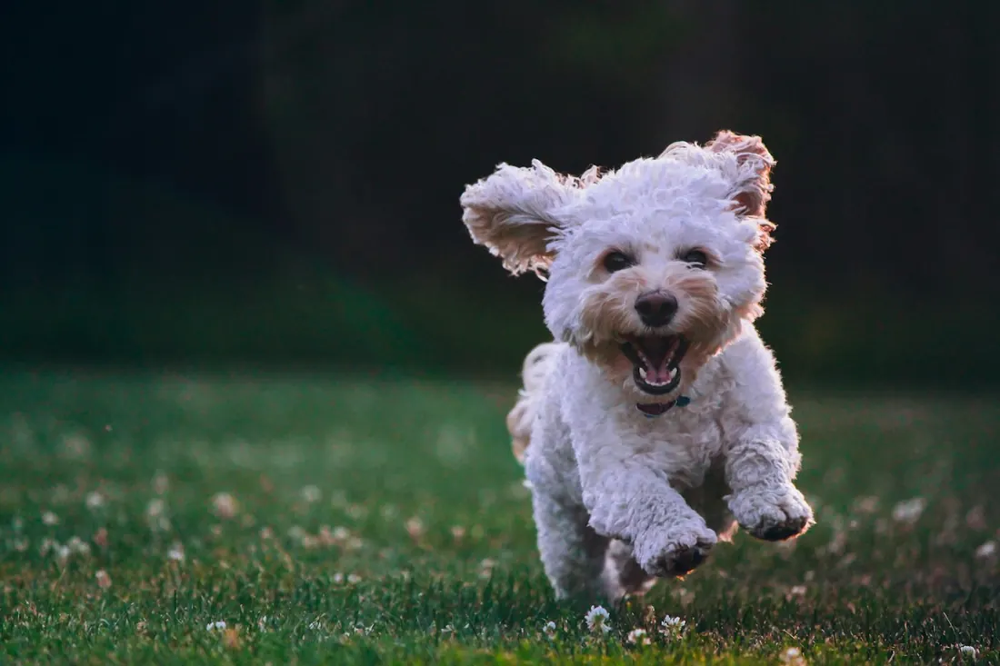

Home / Happy Tails
Adopted
Happy tails & forever homes
Dogs we have placed and the families who adopted them.

Preview note: These stories are placeholders. The current site's "Adopted" page is empty, so this gallery will be filled with BLR's real adoption photos and adopter quotes in Phase 4.

Bonded pair who found a family with a big backyard and two kids to play with.

Was stressed at the shelter. Now has a sunny window seat.

Our high-energy girl now hikes every weekend with her new mom.

Now sniffing every corner of Cypress on her twice-daily walks.

Her foster family fell for her first. Now she lives with her adopters.

Has a new running buddy and a very patient cat sister.
Adopted from us?
Send us an update
Email a photo and a few words about life with your dog, and we may feature you here.
Share your story
Next step
Ready to apply?
Apply to adopt or foster, or make a donation.